품질경영기사 (2021-03-07 기출문제)
1과목: 실험계획법
1. 2요인 실험의 계수치 데이터에서 ST=7, SAB=5, SA=3, SB=1일 때, Se1과 Se2는 각각 얼마인가?
- Se1=1, Se2=2
- Se1=2, Se2=3
- Se1=3, Se2=2
- Se1=5, Se2=6
(정답률: 75%)

2. 다음과 같은 L27(313)형 직교배열표에서 교호작용 B×C(8열)의 제곱합(SB×C)이 600, 교호작용 B×C(11열)의 제곱합(SB×C)이 1000일 경우, 교호작용의 제곱평균값(VB×C)은?
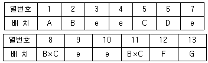
- 200
- 400
- 800
- 1600
(정답률: 37%)
3. 1요인 실험에서 각 수준간의 모평균 차에 대한 95% 신뢰수준의 신뢰구간을 보고 유의한 차가 있다고 할 수 없는 것은?
- μ1-μ3=-1.39~-0.85
- μ1-μ2=-0.6~-0.06
- μ2-μ4=-0.43~0.11
- μ3-μ4=0.35~0.89
(정답률: 54%)
4. 실험횟수를 늘리지 않고 실험전체를 몇 개의 블록으로 나누어 배치시킴으로써 동일 환경내의 실험횟수를 적게 하도록 고안해 낸 배치법은?
- 교락법
- 라틴방격법
- 분할법
- 다원배치법
(정답률: 68%)
5. 4수준 요인 A와 2수준 요인 B, C, D, F와 A×B, B×C, B×D를 배치하는 경우 최적의 직교배열표로 맞는 것은?
- L4(23)
- LS(27)
- L16(415)
- L16(215)
(정답률: 59%)
6. TV 색상밀도의 기능적 한계가 m±7이라고 가정하면 색상밀도가 m±7일 때, 소비자의 환경이나 취향의 다양성을 고려하여 소비자의 절반이 TV가 고장이라고 한다. TV의 수리비가 평균 A=98000원이라고 할 때, 색상밀도가 m+4인 수상기를 구입한 소비자가 입은 평균손실 L(m+4)은?
- 8000원
- 16000원
- 32000원
- 64000원
(정답률: 50%)
7. 데이터의 구조식이 다음과 같은 실험에서 SABC의 값은 얼마인가? (단, SA=675.4, SB(A)=160.3, SC(AB)=88.1이다.)
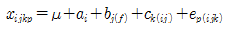
- 248.4
- 763.5
- 923.8
- 1011.9
(정답률: 62%)
8. 반복 없는 2요인 실험을 행했을 때, A3B2수준 조합에서 결측치가 발생하였다. 결측치 ⓨ의 값을 점추정하면?
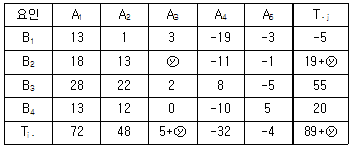
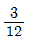
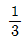
- 1.0
- 2.17
(정답률: 46%)
9. 수준의 선택이 랜덤으로 이루어지고 각 수준이 기술적 의미를 가지고 있지 못하면 주효과 i들의 합이 일반적으로 0이 아닌 요인은?
- 변량요인
- 보조요인
- 모수요인
- 혼합요인
(정답률: 78%)
10. 33형 요인실험에서 9개의 블록을 만들 때, 요인 AB2C2와 AC를 정의대비라고 하면 블록과 교락되는 정의대비는?
- AB2
- AC2
- BC
- BC2
(정답률: 57%)
11. 각각 3,5개의 수준을 갖는 두 개의 요인의 모든 수준조합에서 각각 2회 반복을 하였다. 교호작용이 무시되지 않는 경우, 오차항의 자유도는 얼마인가?
- 8
- 12
- 15
- 23
(정답률: 55%)
12. 24형 요인 배치법에서 2중 교락 설계 시 블록효과와 교락시킨 2개의 요인이 ABC, BCD일 때, 블록효과와 교락되는 다른 하나의 요인은?
- AD
- AC
- BC
- BD
(정답률: 69%)
13. 회귀분석 분산분석표에서 나머지 제곱합(Sr)이 유의하지 않았다. 이런 경우 회귀로부터의 제곱합 Suㆍx의 불편분산은 약 얼마인가?
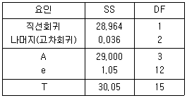
- 0.0638
- 0.0776
- 1.0860
- 1.2100
(정답률: 42%)
14. 요인 A(원료구입선: l수준)를 1차 단위로, 요인 B(가공방법: m수준)를 2차 단위로 하여 블록 반복 2회 분할법에 의한 실험을 하는 경우 데이터의 구조식은? (단, i=1,2,…, l,j=1,2,…,m,k=1,2,…,r이다.)
- xijk=μ+ai+b(i)+ek(ij)
- xijk=μ+ei+b(i)+e(ijk)
- xijk=μ+ai+rk+e(1)ik+bj+(ab)ij+e(2)ijk
- xijk=μ+ai+(ar)ik+e(1)ik+bj+(ab)ij+e(2)ijk
(정답률: 66%)
15. 3개의 수준에서 반복횟수가 8인 1요인 실험에서 각 수준에서의 측정값의 합은 y1ㆍ,y2ㆍ,y3ㆍ라고 할 때, 관심을 갖는 대비는 다음과 같은 2개가 있다. 이 두 대비가 서로 직교대비가 되기 위한 k 값?
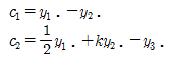
- -1
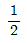
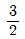
- 1
(정답률: 75%)
16. 23형 계획에서 교호작용 ABC를 블록과 교락시킨 후 abc가 포함된 블록으로 1/2일부실 시법을 행하였을 때, 교호작용 BC와 별명(alias)관계에 있는 주요인의 주효과를 맞게 표현한 것은?
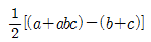
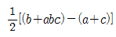
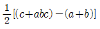
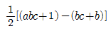
(정답률: 66%)
17. 요인 A의 3수준을 택하고, 반복 4회의 1요인 실험을 행하였을 때, 변량요인 A의 평균제곱 VA의 기댓값은? (단, xij=μ+ai+eij,ai~N(0,σ2A), eij~N(0,σe2)이다.)
- σe2
- σe2+3σA2
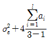
- σe2+4σA2
(정답률: 69%)
18. 4개의 모수요인에 대해 수준수를 5로 하는 그레코라틴방격 실험을 행한다면 오차의 자유도는?
- 6
- 8
- 12
- 16
(정답률: 50%)
19. 난괴법에 관한 설명으로 틀린 것은?
- 난괴법에서 사용되는 변량요인을 보통 블록요인 혹은 집단 요인이라고 부른다.
- 1요인은 모수요인이고, 1요인은 변량요인인 반복 없는 2요인 실험이다.
- 요인 B(변량요인)인 경우 수준간의 산포를 구하는 것이 의미가 있고, 모평균 추정은 의미가 없다.
- A(모수요인), B(블록요인)로 난괴법 실험을 한 경우 층별이 잘 된 경우에 정보량이 적어지는 경향이 있다.
(정답률: 66%)
20. 반복 없는 3요인 실험에서 A, B, C요인의 수준이 각각 l, m, n이라고 할 때, A×C의 자유도(vA×C)는? (단, 모수모형이고, l=3, m=4, n=4이다.)
- 4
- 6
- 8
- 12
(정답률: 78%)
2과목: 통계적품질관리
21. 계수형 샘플링 검사 절차 – 제1부 : 로트별 합격품질한계(AQL) 지표형 샘플링 검사 방식(KS Q ISO 2859-1)에서 엄격도 조정을 위한 전환규칙으로 틀린 것은?
- 수월한 검사에서 1로트가 불합격되면 보통검사로 이행한다.
- 까다로운 검사에서 연속 5로트가 합격하면 보통검사로 이행한다.
- 까다로운 검사에서 불합격 로트의 누계가 10 로트에 도달하면 검사를 중지한다.
- 보통검사에서 연속 5로트 이내에 2로트가 불합격이 되면 까다로운 검사로 이행한다.
(정답률: 63%)
22. 확률변수 X가 다음의 분포를 가질 때 Y의 기댓값은? (단, Y=(X-1)2이다.)
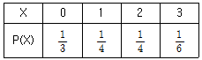
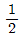
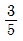
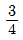
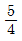
(정답률: 69%)
23. 전선의 인장강도(kg/mm2)rk 평균 44이상인 로트(lot)는 합격으로 하고, 39이하인 로트는 불합격으로 하려는 검사에서 합격 판정치(
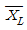
)를 구했더니 42.466이었다. 입고된 로트에서 5개의 시료샘플을 취하여 평균을 구했더니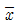
=41.6 이었다면 이 로트의 판정은?- 합격
- 불합격
- 알 수 없다.
- 다시 샘플링해야 한다.
(정답률: 53%)
24. 시료의 크기가 3인 시료군 30개를 측정하여
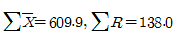
을 얻었다. 이때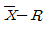
관리도의 관리상한은 각각 약 얼마인가? (단, 군의 크기가 3일 때, A2=1.023, D4=2.575이다.) 관리도: 25.036, R 관리도: 11.845
관리도: 25.036, R 관리도: 11.845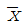
관리도: 25.036, R 관리도: 20.047 관리도: 32.175, R 관리도: 11.845
관리도: 32.175, R 관리도: 11.845 관리도: 32.175, R 관리도: 20.047
관리도: 32.175, R 관리도: 20.047
(정답률: 60%)
25. 로트의 평균치를 보증하는 경우에 대한 검사특성곡선에 관한 내용으로 틀린 것은?
- 가로축의 눈금은 로트의 평균값이다.
- 세로축의 눈금은 로트의 합격확률이다.
- 망소특성에서 합격확률 KL(m)값을 구하기 위한 식은
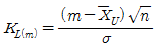
이다. - 망소특성에서 KL(m)의 값이 양의 값으로 나타나는 경우 로트의 평균 m이
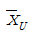
보다 큰 경우로 합격확률은 최소한 50%보다 크다.
(정답률: 44%)
26. 실제로 귀무가설 H0가 옳지 않은 데도 불구하고 H0를 기각하지 못하는 오류는?
- 제1종 오류
- 제2종 오류
- 제3종 오류
- 생산자의 위험
(정답률: 67%)
27. Nn=5, k=30인
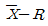
관리도에서 관리계수 Cf=1.5일 때, 판정으로 맞는 것은?- 급간 변동이 크다.
- 군 구분이 나쁘다.
- 대체로 관리상태이다.
- 이상원인이 존재하지 않는다.
(정답률: 42%)
28. 검정통계계량을 계산할 때 X2통계량을 사용할 수 없는 것은?
- 한국인과 일본인이 야구, 축구, 농구에 대한 선호도가 다른지를 조사할 때
- 20대, 30대, 40대별로 좋아하는 음식(한식, 중식, 양식)에 영향을 미치는지를 조사할 때
- 이론적으로 남녀의 비율이 같다고 하는데, 어느 마을의 남녀 성비가 이론을 따르는지 검정할 때
- 어느 대학의 산업공학과에서 샘플링한 4학년생 10명의 토익성적과 3학년생 15명의 토익성적의 산포에 대한 등분산성을 검정할 때
(정답률: 59%)
29. 다음은 어떤 작물의 물세탁에 의한 신축성 영향을 조사하기 위해 150점을 골라 세탁전(x), 세탁 후(y)의 길이를 측정하여 얻은 데이터이다. H0:ρ=0, H1:ρ≠0에 대한 검정통계량은 약 얼마인가?
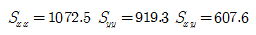
- 9.412
- 9.446
- 11.953
- 11.993
(정답률: 36%)
30. 관리도에서 관리하여야 할 항목은 일반적으로 시간, 비용 또는 인력 등을 고려하여 꼭 필요하다고 생각되는 것이어야 한다. 이러한 항목에 관한 설명으로 가장 거리가 먼 것은?
- 가능한 한 대용특성을 선택하는 것은 피할 것
- 제품의 사용목적에 중요한 관계가 있는 품질특성일 것
- 공정의 적합품과 부적합품을 충분히 반영할 수 있는 특성치일 것
- 계측이 용이하고 경비가 적게 소요되며 공정에 대하여 조처가 쉬울 것
(정답률: 69%)
31. 제1종 오류(α)와 제2종 오류(β)에 관한 설명으로 틀린 것은?
- α가 커지면 상대적으로 β도 커진다.
- 신뢰구간이 작아지면 β값이 상대적으로 작다.
- 표본의 크기 n을 일정하게 하고, α를 크게 하면 (1-β)도 커진다.
- α를 일정하게 하고, 시료 크기 n을 증가시키면 β는 작아진다.
(정답률: 69%)
32. 부적합률에 대한 계량형 축차 샘플링 검사 방식(표준편차 기지)(KS Q ISO 39511: 2018)에서 양쪽 규격한계의 결합관리의 경우이고 ncum＜nt일 때, 상한 합격 판정치 AU-L는? (단, σ가 규격 간격(U-L)과 비교하여 충분히 작고, g는 합격판정선 및 불합격판정선의 기울기, hA는 합격판정선의 절편이다.)
- gσncum-hAσ
- gσncum+hAσ
- (U-L-gσ)ncum-hAσ
- (U-L-gσ)ncum+hAσ
(정답률: 49%)
33. 종래 한 로트에서 발견되는 부적합수는 평균 12개이었다. 작업방법을 개선한 후 하나의 로트를 뽑아서 부적합수를 세어보니 7개였다. 평균 부적합수가 줄었는지를 유의수준으로 5%로 검정할 때, 기각역과 검정통계량(u0)의 값은 약 얼마인가?
- 기각역: u0 ≤-1.96, u0=-1.44
- 기각역: u0 ≤-1.96, u0=-1.89
- 기각역: u0 ≤-1.645, u0=-1.44
- 기각역: u0 ≤-1.645, u0=-1.89
(정답률: 52%)
34. 샘플링 검사보다 전수검사가 유리한 경우는?
- 검사항목이 많은 경우
- 검사비용에 비해 제품이 고가인 경우
- 검사비용을 적게 하는 것이 이익이 되는 경우
- 생산자에게 품질향상의 자극을 주고 싶은 경우
(정답률: 62%)
35. 10톤씩 적재하는 100대의 화차에서 5대의 화차를 샘플링하여 각 화차로부터 3인크리먼트씩 랜덤하게 시료를 채취하는 샘플링 방법은?
- 집락 샘플링
- 층별 샘플링
- 계통 샘플링
- 2단계 샘플링
(정답률: 48%)
36. A대학 산업공학과 학생들의 통계학 시험성적을 분석한 결과 성적분포가 N(70, 82)이었다. 72.08점 이상 80.0점 이하인 학생에게 B학점을 주고자 한다. B학점을 받을 학생의 비율은 몇 %인가? (단, u0.6026=0.26, u0.6915=0.5, u0.9332=1.5, u0.8944=1.25이다.)
- 20.2%
- 24.2%
- 29.2%
- 33.1%
(정답률: 61%)
37. 임의의 2로트(lot)로부터 각각 크기가 8과 10인 시료를 채취하여 모평균의 차를 검정하려고 한다. 사용되는 검정통계량의 자유도는? (단, 등분산인 경우이다.)
- 15
- 16
- 17
- 18
(정답률: 61%)
38. 공정에서 작은 변화의 발생을 빨리 탐지하기 위한 방법으로 가장 거리가 먼 것은?
- 부분군의 채취빈도를 늘인다.
- 관리도의 작성 과정을 개선한다.
- 관리도상의 런의 길이, 타점들의 특징이나 습성을 세심하게 관찰한다.
- 슈하트(Shewhart) 관리도보다 지수가중이동평균(EWMA) 관리도를 이용한다.
(정답률: 35%)
39. 두 모집단에서 각각 n1=5, n2=6으로 추출하여 어떤 특정치를 측정한 결과가 다음의 데이터와 같았다. 모분산비의 검정을 위한 검정통계량은 약 얼마인가?
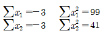
- 2.08
- 2.80
- 3.08
- 3.80
(정답률: 41%)
40. 다음은 일정 단위당 확인한 시료군(k)에 대한 부적합수(c) 자료이다. c관리도의 중심선은 약 얼마인가?
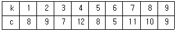
- 0.8
- 1.8
- 4.8
- 8.8
(정답률: 63%)
3과목: 생산시스템
41. 간판시스템에서 작업장에서 부품의 수요율이 1분당 3개이고, 용기당 30개의 부품을 담을 수 있는 경우 필요한 간판의 수는? (단, 순환시간은 100분이다.)
- 10개
- 20개
- 25개
- 30개
(정답률: 75%)
42. 일반적으로 공정대기 현상을 유발시키는 요인과 가장 거리가 먼 것은?
- 일반적인 여력의 불균형
- 각 공정 간의 평준화 미흡
- 전후공정의 작업시간이 다름
- 직렬 공정으로부터 흘러들어 옴
(정답률: 63%)
43. 수요예측에서 지수평활계수(α)의 결정시의 설명으로 맞는 것은?
- 0＜α＜1의 값을 이용하며 과거의 모든 자료가 예측에 반영된다.
- 신제품이나 유행상품의 수요예측에서는 평활계수(α)를 적게 한다.
- 실질적인 수요변동이 예견될 때는 예측의 감응도를 높이기 위하여 평활계수(α)를 적게한다.
- 수요의 기본수준에 큰 변동이 없는 것으로 예견되면 평활계수(α)를 크게 하여 예측의 안정도를 높인다.
(정답률: 44%)
44. 단일설비 순서 계획을 위한 우선순위규칙 중 작업의 납기를 명시적으로 고려하는 것은?
- 긴급률법(CR)
- 최단시간법(STP)
- 최장시간법(LPT)
- 선입선출법(FCFS)
(정답률: 68%)
45. 각 작업의 작업시간과 납기가 다음과 같을 때 최단처리시간법으로 작업의 우선순위를 결정하려고 한다. 이 때 평균완료시간과 평균납기 지연시간은 각각 며칠인가? (단, 오늘은 3월 1일 아침이다.)
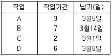
- 8.5일, 1.2일
- 9일, 2일
- 8.5일, 1.7일
- 9일, 2.5일
(정답률: 50%)
46. 적시생산시스템(JIT)의 특징이 아닌 것은?
- 생산의 평준화를 위해 소로트화를 추구한다.
- 작업자의 다기능공화로 작업의 유연성을 높인다.
- 준비교체 횟수를 줄여 가동률 향상을 추구한다.
- 공급자와는 긴밀한 유대관계로 사내 생산 팀의 한 공정처럼 운영한다.
(정답률: 49%)
47. 테일러 시스템과 포드 시스템에 관한 설명으로 틀린 것은?
- 포드는 컨베이어에 의한 이동조립법을 실시하였다.
- 테일러는 고임금과 저노무비 실현을 위하여 과학적 관리법을 체계화하였다.
- 테일러 시스템의 특징이 동시관리에 있다면, 포드시스템은 과업관리라 할 수 있다.
- 포드 시스템의 단순화, 표준화, 전문화는 오늘날 대량생산의 일반원칙이 되었다.
(정답률: 60%)
48. 생산운영관리에서 다루는 생산 시스템에 관한 설명으로 맞는 것은?
- 시스템은 설비의 자동화를 의미한다.
- 시스템의 요건은 적품, 적량, 적시, 적가를 의미한다.
- 시스템의 기본 기능은 설계를 유용하게 하는 것이다.
- 시스템의 공통적 특징은 집합성, 관련성, 목적추구성, 환경적응성이다.
(정답률: 47%)
49. MRP 시스템의 투입 자료가 아닌 것은?
- 자재명세서(bill of materials)
- 제품설계도(product drawing)
- 재고기록 파일(inventory record file)
- 대일정계획(master production schedule)
(정답률: 58%)
50. 어떤 조립라인 균형 문제의 작업, 선후관계와 과업시간이 그림과 같다. 작업장을 3개로 정할 때 얻을 수 있는 최고의 라인효율은 약 얼마인가?
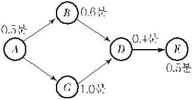
- 85.5%
- 88.9%
- 90.9%
- 94.5%
(정답률: 41%)
51. 생산하는 품종의 수와 품종별 생산량이 중간 정도인 경우에 적합한 생산시스템은?
- 뱃치(batch) 시스템
- 잡샵(job-shop) 시스템
- 반복(repetitive) 시스템
- 연속(continuous) 시스템
(정답률: 47%)
52. 구매관리 방식 중 집중구매방식의 특성으로 틀린 것은?
- 종합구매로 구매비용이 적게 든다.
- 공장별 자재의 긴급조달이 용이하다.
- 대량구매로 가격과 거래 조건이 유리하다.
- 시장조사, 거래처 조사, 구매효과의 측정 등을 효과적으로 실행할 수 있다.
(정답률: 71%)
53. 가공물이 슈트에 막혀서 공전하거나 품질 불량으로 센서가 작동하여 일시적으로 정지하는 경우 이들 가공물을 제거(Reset)하기만 하면 설비는 정상적으로 작동하는 것으로서 설비 고장과는 본질적으로 다른 로스는?
- 속도 로스
- 순간정지 로스
- 준비ㆍ조정 로스
- 공구교환 로스
(정답률: 58%)
54. 수요예측기법으로서 정성적 기법이 아닌 것은?
- 전문가패널법
- 델파이법
- 시계열분석법
- 중역의견법
(정답률: 55%)
55. 워크샘플링의 관측요령을 가장 적절하게 표현한 것은?
- 직접 및 연속 관측
- 간접 및 연속 관측
- 랜덤한 시점에서 순간 관측
- 정기적인 시점에서 순간 관측
(정답률: 63%)
56. 집중보전과 비교했을 때, 부문보전의 단점이 아닌 것은?
- 보전책임 소재가 불명확하다.
- 보전기술의 향상이 곤란하다.
- 생산우선으로 보전이 경시된다.
- 특정 설비에 대한 습숙이 곤란하다.
(정답률: 33%)
57. ERP 시스템의 구축 시 ERP 패키지를 활용하는 경우의 장점으로 맞는 것은?
- 개발기간이 장기화된다.
- 사용자의 요구사항을 충실히 반영한다.
- 비정형화된 예외업무의 수용이 용이하다.
- Best Prectice의 수용으로 효율적 업무개선이 이루어진다.
(정답률: 60%)
58. 일정계획의 주요 기능에 해당되지 않는 것은?
- 작업할당
- 제품조합
- 부하결정
- 작업 우선순위 결정
(정답률: 62%)
59. 불확실성하의 의사결정기법에 대한 설명으로 틀린 것은?
- 기대화폐가치(EMV)기준은 낙관계수를 사용한다.
- 최소성과 최대화(Maximin) 기준은 비관주의적 기준이다.
- 라플라스(Laplace)기준은 동일확률기준이라고도 한다.
- 최대후회최소화(Minimax regret) 기준은 기회손실의 최대값이 최소화되는 대안을 선택한다.
(정답률: 39%)
60. 동작경제의 원칙 중 신체 사용에 관한 원칙으로 맞는 것은?
- 팔 동작은 곡선보다는 직선으로 움직이도록 설계한다.
- 근무시간 중 휴식이 필요한 때에는 한 손만 사용한다.
- 모든 공구나 재료는 정위치에 두도록 하여야 한다.
- 두 손의 동작은 동시에 시작하고 동시에 끝나도록 한다.
(정답률: 56%)
4과목: 신뢰성관리
61. 와이블 분포에 관한 설명으로 틀린 것은?
- 스웨덴의 Waloddi Weibull이 고안한 분포이다.
- 형상모수의 값이 1보다 작은 경우에는 고장률이 감소한다.
- 고장확률밀도함수에 따라 고장률함수의 분포가 달라진다.
- 위치모수가 0이고 사용시간이 t=η이면, 형상모수에 관계없이 불신뢰도는 e-1이 된다.
(정답률: 50%)
62. 어떤 기기의 수명이 평균 500시간, 표준편차 50시간인 정규분포를 따른다. 이 제품을 400시간 사용하였을 때의 신뢰도는 약 얼마인가? (단, u0.993S=2.5, u0.9772=2.0, u0.9332=1.5, u0.8413=1.0이다.)
- 0.8413
- 0.9332
- 0.9772
- 0.9938
(정답률: 64%)
63. KS A 3004(용어-신인성 및 서비스 품질)에서 정의하고 있는 고장에 관한 용어 중 시험결과를 해석하거나 신뢰성의 척도를 계산하는데 포함되어야 하는 고장으로 판정기준을 미리 명확히 해 두어야 하는 것은?
- 부분고장
- 연관고장
- 오용고장
- 경향고장
(정답률: 50%)
64. 어떤 부품을 신뢰수준 90%, C=1에서 λ1=1%/103시간임을 보증하기 위한 계수 1회 샘플링검사를 실시하고자 한다. 이때 시험기간 t를 1,000시간으로 할 때, 샘플수는 몇 개인가? (단, 신뢰수준은 90%로 한다.)
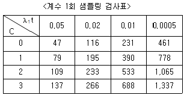
- 79
- 195
- 390
- 778
(정답률: 58%)
65. 초기고장 기간에 발생하는 고장의 원인이 아닌 것은?
- 설계 결함
- 불충분한 보전
- 조립상의 결함
- 불충분한 번인(Burn-in)
(정답률: 72%)
66. 수명시험 방식 중 정시중단방식의 설명으로 맞는 것은?
- 정해진 시간마다 고장수를 기록하는 방식
- 미리 고장 개수를 정해놓고 그 수의 고장이 발생하면 시험을 중단하는 방식
- 미리 시간을 정해놓고 그 시간이 되면 고장수에 관계없이 시험을 중단하는 방식
- 미리 시간을 정해놓고 그 시간이 되면 고장난 아이템에 관계없이 전체를 교체하는 방식
(정답률: 66%)
67. 규정 시간을 사용하였을 때의 부품의 신뢰도가 0.45밖에 되지 않는다. 그런데 이 부품이 사용되는 곳의 신뢰도는 0.95가 되어야 한다. 따라서 병렬 리던던시 설계에 의거 이 부품이 사용되는 곳의 신뢰도를 증대시키려고 한다. 신뢰성 목표치의 달성을 위해서는 몇 개의 부품을 병렬로 연결 하여야 하는가?
- 3
- 4
- 5
- 6
(정답률: 28%)
68. 와이블 확률지에 수명 데이터를 타점하여 형상 파라미터 m을 구했을 때 디버깅(debugging)이 가장 유효한 경우는?
- m＜1
- m=1
- m＞1
- m=0
(정답률: 50%)
69. 어떤 재료의 강도는 평균이 40kg/mm2이고, 표준편차가 4kg/mm2인 정규분포를 따른다. 이 재료에 걸리는 부하는 평균이 25kg/mm2이고, 표준편차가 3kg/mm2이다. 이때 재료가 파괴될 확률은 약 얼마인가? (단, P(u＞2=0.02275), P(u＞3)=0.00135이다.)
- 0.00135
- 0.02275
- 0.99725
- 0.99865
(정답률: 60%)
70. FMEA 방법에 대한 설명으로 트린 것은?
- 정성적 고장분석 방법이다.
- 상향식(bottom up) 분석방법을 취하고 있다.
- 잠재적 고장의 발생을 감소시키거나 제거할 수 있다.
- 기본사상에 중복이 있는 경우에는 Boolean대수에 의해 결함수를 간소화하여야 한다.
(정답률: 34%)
71. 고유 가동성(inherent availability)의 척도로 맞는 것은?
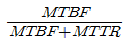
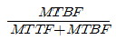
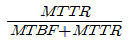
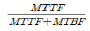
(정답률: 59%)
72. Y회사에서는 와이블 분포에 의거하여 제품의 고장시간 데이터를 해석하고, 그 신뢰도를 추정하고 있다. 그 이유로서 가장 적절한 것은?
- 고장률이 IFR에 따르기 때문에
- 고장률이 CFR에 따르기 때문에
- 일반적인 제품의 형상모수(m)는 1이기 때문에
- 고장률이 어떤 패턴에 따르는지 모르기 때문에
(정답률: 49%)
73. 지수분포의 수명을 갖는 부품 n개를 시험하여 고장개수가 r개가 되었을 때 관측을 중단하였다. 총시험시간(T)을
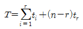
이라고 할 때, 평균수명시간의 양쪽신뢰구간을 맞게 표현한 것은?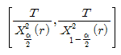
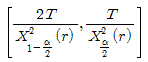
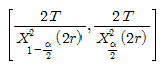
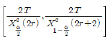
(정답률: 51%)
74. A, B, C 3개의 부품이 지수분포를 따르면서 직렬로 연결된 시스템의 MTBF를 100시간 이상으로 하고자 할 때, C의 MTBF는? (단, MTBFA=300시간, MTBFB=600시간이다.)
- 50
- 100
- 200
- 400
(정답률: 47%)
75. 수명이 지수분포를 따르는 동일한 제품에 대하여 두 온도 수준에서 각각 20개씩 수명시험을 실시하여 다음과 같은 데이터를 얻었다. 이때 가속계수는 약 얼마인가?
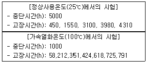
- 4.6
- 5.3
- 7.6
- 8.8
(정답률: 36%)
76. 다음 FTA에서 정상사상의 고장확률은? (단, FA=0.02, FB=0.⑤, FC=0.03이다.)
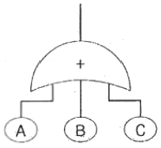
- 0.0003
- 0.0970
- 0.9030
- 0.9931
(정답률: 48%)
77. 고장률 λ=0.01/hr를 갖는 지수분포를 따르는 동일한 부품으로 구성된 4중 2 구조 시스템의 MTBF는 약 얼마인가?
- 100hr
- 108hr
- 125hr
- 150hr
(정답률: 33%)
78. 신뢰성 배분(reliability allocation)의 목적으로 맞는 것은?
- 아이템의 신뢰성을 보증하고 계약 요구사항을 만족시키기 위하여 시험한다.
- 전체 시스템에 요구되는 신뢰도 목표값을 서브시스템이나 더 낮은 수준의 아이템의 신뢰도 목표값으로 배정하기 위하여 시험한다.
- 아이템의 개발과정에서 설계 마진 내환경성 잠재적 약점과 예상하지 못한 상호작용을 평가하여 개발위험을 감소하기 위하여 시험한다.
- 신뢰성 예측, 시험방법 개발 등 기술적 정보를 수집하거나 고장 메커니즘의 조사 및 고장의 재현 사고대책수립 및 유효성 확인을 위해 시험한다.
(정답률: 46%)
79. 10개의 부품에 대하여 500시간 수명시험 결과 38, 68, 134, 248, 470시간에 각각 고장이 발생하였을 때 평균 고장률은? (단, 고장시간은 지수분포를 따른다.)
- 2.146×10-3/시간
- 1.746×10-3/시간
- 1.546×10-3/시간
- 1.446×10-3/시간
(정답률: 52%)
80. 시스템이 고장상태에서 정상상태로 회복하는 시간(보전시간)을 t라고 할 때, t=0에서 보전도 함수 M(t)의 값은?
- 0.000
- 0.500
- 0.667
- 1.000
(정답률: 44%)
5과목: 품질경영
81. 그래프 중 수량의 크기를 비교할 목적으로 주로 사용하는 것은?
- 연관도
- 점그래프
- 꺾은선 그래프
- 막대그래프
(정답률: 67%)
82. 품질관리의 4대 기능 중 품질의 설계단계에서 실행하는 업무로 맞는 것은?
- 사내규격이 체계화되어 품질에 대한 정책이 일관되도록 하는 업무
- 설비, 기계의 능력이 품질실현의 요구에 적합하도록 보전하는 업무
- 검사, 시험방법, 판정의 기준이 명확하며, 판정의 결과가 올바르게 처리되도록 하는 업무
- 원재료를 회사규격에서 규정한 품질대로 확실히 수입하여 적시에 정량을 제조현장에 납품하는 업무
(정답률: 47%)
83. 표준의 서식과 작성방법(KS A 0001:2015)에 관한 사항 중 틀린 것은?
- 본문은 조항의 구성 부분의 주체가 되는 문장이다.
- 본체는 표준 요소를 서술한 부분으로 부속서는 제외한다.
- 추록은 본문, 각주, 비고, 그림, 표 등에 나타내는 사항의 이해를 돕기 위한 예시이다.
- 조항은 본체 및 부속서의 구성 부분인 개개의 독립된 규정으로서 문장, 그림, 표, 식 등으로 구성되며, 각각 하나의 정리된 요구사항 등을 나타내는 것이다.
(정답률: 29%)
84. 공정능력지수(Cp)로 공정능력을 평가할 경우의 판단 기준으로 맞는 것은?
- Cp가 1.67이상 : 공정능력이 매우 우수
- Cp가 1.00~1.33 : 공정능력이 우수
- Cp가 0.67~1.00 : 공정능력이 보통 수준
- Cp가 0.5이하 : 공정능력이 나쁨
(정답률: 48%)
85. 품질전략을 수립할 때 계획단계(전략의 형성 단계)에서 SWOT분석을 많이 활용하고 있다. 여기서 “T”는 무엇인가?
- 기회
- 강점
- 약점
- 위협
(정답률: 67%)
86. 품질비용의 3가지 분류항목에 해당되지 않는 것은?
- 예방비용
- 평가비용
- 준비비용
- 실패비용
(정답률: 69%)
87. 품질관리업무를 명확히 하는데 있어 기능전개방법이 매우 유효한데 미즈도 박사가 주장하는 4가지 관리항목에 해당되지 않는 것은?
- 생산의 관리 항목
- 기능의 관리 항목
- 공정의 관리 항목
- 신규업무의 관리항목
(정답률: 15%)
88. 품질분임조 활동 시 주제를 선정하는 방법으로 틀린 것은?
- 구체적인 문제를 선정한다.
- 품질 문제에 한정하여 주제를 선정한다.
- 분임조원들의 공통적인 문제를 선정한다.
- 개선의 필요성을 느끼고 있는 문제를 선정한다.
(정답률: 68%)
89. 품질경영시스템 – 기본사항과 용어(KS Q ISO 9000:2015)에서 최고경영자에 의해 공식적으로 표명된 품질 관련 조직의 전반적인 의도 및 방향을 나타내는 것은?
- 품질경영
- 품질기획
- 품질보증
- 품질방침
(정답률: 54%)
90. 기업이 고객과 관련된 조직의 내ㆍ외부 정보를 층별ㆍ분석ㆍ통합하여 고객 중심 자원을 극대화하고, 고객특성에 맞는 마케팅활동을 계획ㆍ지원 평가하는 방법으로 장기적인 고객관계를 가능하게 하는 방법은?
- 고객의 소리(VOC)
- 품질기능전개(QFD)
- 고객관계관리(CRM)
- 서브퀄(SERVQUAL)
(정답률: 60%)
91. 사내표준에 대한 설명으로 틀린 것은?
- 사내표준은 성문화된 자료로 존재하여야 한다.
- 사내표준의 개정은 기간을 정해 정기적으로 실시한다.
- 사내표준은 조직원 누구나 활용할 수 있도록 하여야 한다.
- 회사의 경영자가 솔선하여 사내규격의 유지와 실시를 촉진시켜야 한다.
(정답률: 50%)
92. 산업표준화법령상 품질관리담당자가 받아야 하는 양성교육 및 정기교육의 내용이 아닌 것은?
- 산업표준화법규 교육
- 통계적인 품질관리기법 교육
- 산업표준화와 품질경영의 개요 교육
- 산업표준화 및 품질경영의 추진 전략 교육
(정답률: 54%)
93. 제조물 책임법에서 규정하는 용어의 정의에 대한 내용으로 틀린 것은?
- 제조업자: 제조물의 제조, 가공 또는 수입을 업으로 하는 자를 말한다.
- 제조물: 다른 동산이나 부동산의 일부를 구성하는 경우를 제외한 제조 또는 가공된 동산을 말한다.
- 결함: 해당 제조물에 제조, 설계 또는 표시상의 결함이 있거나 그 밖에 통상적으로 기대할 수 있는 안전성이 결여되어 있는 것을 말한다.
- 제조상의 결함: 제조업자가 제조물에 대하여 제조상ㆍ가공상의 주의의무를 이행하였는지에 관계없이 제조물이 원래 의도한 설계와 다르게 제조ㆍ가공됨으로써 안전하지 못하게 된 경우를 말한다.
(정답률: 44%)
94. 서비스 품질을 정의할 수 있다고 해도 서비스 품질을 측정하기는 쉽지 않은 이유의 설명으로 틀린 것은?
- 서비스 품질은 서비스의 전달이 완료되기 이전에는 검증되기가 어렵다.
- 서비스 품질의 개념이 객관적이기 때문에 주관적으로 측정하기가 어렵다.
- 고객이 서비스 품질에 대한 자신의 정보를 적극적으로 제공하지 않기 때문이다.
- 서비스 품질을 측정하려면 고객에게 직접 질의를 해야 하므로 시간과 비용이 많이 든다.
(정답률: 62%)
95. 신제품개발, 신기술개발 또는 제품책임문제의 예방 등과 같이 최초의 시점에서는 최종결과까지의 행방을 충분히 짐작할 수 없는 문제에 대하여, 그 진보과정에서 얻어지는 정보에 따라 차례로 시행되는 계획의 정도를 높여 적절한 판단을 내림으로써 사태를 바람직한 방향으로 이끌어 가거나 중대 사태를 회피하는 방책을 얻는 방법은?
- 계통도법
- 연관도법
- 친화도법
- PDPC 법
(정답률: 60%)
96. 아래와 같이 조립품의 구멍과 축의 치수가 주어졌을 때 평균 틈새는?
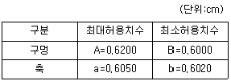
- 0.0020
- 0.0045
- 0.0065
- 0.0085
(정답률: 34%)
97. 품질비용의 분류에서 평가비용항목에 해당되지 않는 것은?
- 수입검사 비용
- 공정검사 비용
- 부적합품처리 비용
- 계측기 검ㆍ교정 비용
(정답률: 53%)
98. 게이지 R&R 평가 결과 % R&R이 8.5%로 나타났다. 이 계측기에 대한 평가와 조치로서 맞는 것은?
- 계측기 관리가 전혀 되지 않고 있으므로 이 계측기는 폐기해야만 한다.
- 계측기의 관리가 매우 잘되고 있는 편이므로 그대로 적용하는데 큰 무리가 없다.
- 계측기 관리가 미흡하며, 반드시 계측기 오차의 원인을 규명하고 해소시켜 주어야만 한다.
- 계측기의 수리비용이나 계측오차의 심각성 등을 고려하여 조치 여부를 선택적으로 결정해야 한다.
(정답률: 46%)
99. 기술표준에 속하지 않는 것은?
- 절차
- 재질
- 치수
- 형상
(정답률: 38%)
100. 공정의 치우침이 없을 경우 6시그마 품질수준에서의 공정 부적합품률은 약 몇 ppm인가?
- 0.002
- 1
- 3.4
- 233
(정답률: 34%)
Se2 = √((SAB-SA)/((k-1)*n)) + √((SAB-SB)/((k-1)*n)) = √((5-3)/((2-1)*2)) + √((5-1)/((2-1)*2)) = 2
따라서 정답은 "Se1=1, Se2=2" 이다. 이유는 2요인 실험에서 Se1은 오차의 크기를 나타내는데, 이는 실험에서 사용된 반복 수와 처리 수에 의해 결정된다. Se2는 처리 효과의 크기를 나타내는데, 이는 실험에서 사용된 처리 수와 오차의 크기에 의해 결정된다. 따라서 Se1과 Se2는 실험의 설계와 실행에 따라 달라질 수 있다.